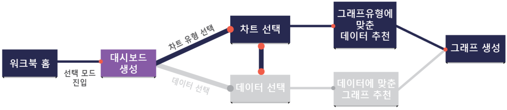
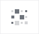

차트 유형 선택¶
Metatron Discovery는 20여 가지의 차트를 제공하고 있습니다. 차트를 선택하기 전에 먼저 컬럼들을 선반에 올려놓으면 그에 어울리는 차트들이 보라색으로 강조됩니다.

아래 표는 각 차트별 생성조건과 사용 속성, 사용 유형, 사용 예시에 대해 정리한 것입니다.
차트명/아이콘
생성 조건
사용 속성
사용 유형
사용 예시
막대형 차트
열: 차원값 1개 이상 & 교차: 측정값 1개 이상
개별 항목의 값 비교
그룹들을 비교할 때 사용하거나 시간에 따른 변화 추이를 보고 싶을 때 사용합니다. 변화 추이가 클 때 사용하면 효과적입니다.
제품별 매출 및 수익 비교
표
열 또는 행: 차원값 1개 이상 & 교차: 측정값 1개 이상
항목별 교차 데이터를 텍스트로 표시
특정 기준에 따른 측정 값을 보고싶을 때 사용합니다. 시각화보다는 자세한 데이터와 정확한 값을 보려는 경우에 사용합니다.
연도별 매출 상세
선형 차트
열: 차원값 1개 이상 & 교차: 측정값 1개 이상
시간의 흐름에 따른 데이터 변화
시간에 따른 변화 추이를 보고 싶을 때 사용합니다. 변화 추이가 작을 때는 막대형 차트보다 선형 차트를 사용하는 것이 효과적입니다.
월별 매출 추이
분산형 차트
열: 측정값 1개 & 행: 측정값 1개 & 교차: 차원값 1개 이상
관련된 여러 항목의 연관관계 표시
두 변수 간의 관계를 정의하고 싶을 때 사용합니다.
제품의 매출과 수익의 관계

히트맵
열 또는 행: 차원값 1개 이상 & 교차: 측정값 1개 이상
항목별 교차 데이터를 색상 분포 형태로 표시
색과 크기를 이용해 두 변수를 직관적으로 비교할 때 사용합니다. 표 차트에서 시각적 요소를 강조하기 위해 사용합니다.
지역별 각 제품 판매량
원형 차트
교차: 차원값 1개 이상, 측정값 1개 이상
전체 대비 각 항목이 차지하는 비율
전체를 이루는 부분들을 비교할 때 사용합니다.
웹 브라우저의 마켓 쉐어 비교
맵뷰
레이어 선반 : 차원값(위치속성), 차원값 1개이상 , 측정값 1개이상
지도 상 각 위치 값에 해당하는 데이터를 표시
지역별 색을 이용한 변수의 직관적 비교에 사용. 시각적 요소를 강조하기 위해 사용
지역별 각 제품 판매량 비교
핵심지표
교차: 측정값 1개 이상
주요 지표를 추세와 함께 표시
조직의 현재 성과에 대한 정보를 빠르게 전달하기 위해 사용합니다.
올 해 이입된 고객 수 혹은 조직의 성과 지표
박스플롯
열: 차원값1개 이상, 행: 차원값1개, 교차: 측정값 1개
값의 상승과 하락을 표시
각 그룹들의 분포를 비교할 때 사용하거나 특정 값의 목표치를 나타낼 때 사용합니다.
비행기 기종 별 지연 시간 분포 비교
폭포 차트
열: 시간속성의 차원값 1개 & 교차: 측정값 1개
값을 더하거나 뺄 때의 누계를 표시
시간에 따른 값의 증가와 감소를 강조할 때 사용합니다.
일정 기간 동안 조직의 팀원 수 변화 관찰 혹은 주식
워드클라우드
교차: 차원값 1개 이상, 측정값 1개
출현 빈도에 비례한 크기로 텍스트를 표시
중요한 단어들을 강조해서 요약하고 싶을 때 사용합니다.
고객들의 코멘트 요약
결합 차트
열: 차원값 1개 이상 & 교차: 측정값 2개 이상, 4개 이하
막대와 라인 차트를 결합하여 데이터를 비교
서로 다른 종류의 정보를 강조하기 위해 사용합니다.
제품별 가격과 판매량을 동시 관찰
트리맵
열: 차원값 1개 & 행: 차원값 1개 이상 & 교차: 측정값 1개
계층 데이터를 중첩된 사각형 집합으로 표시
계층 구조를 갖는 데이터를 시각화하기 위해 사용합니다.
제품별(대분류-중분류-소분류) 매출 관찰
레이더 차트
교차: 차원값 1개, 측정값 1개 이상
중심점을 기준으로 다양한 평가요소를 표시
여러 측정 목표를 직관적으로 비교할 때 사용합니다.
품질을 5요인으로 나누어 평가한 제품들 비교
네트워크 다이어그램
주체 선반: 차원값 1개 & 대상 선반: 차원값 1개 & 연결 선반: 측정값 1개
의존관계가 있는 요소들을 표현하는 연결 다이어그램
데이터의 발생 순서 흐름을 보고 싶을 때 사용합니다.
프로젝트 태스크 흐름을 관찰
측정 차트
열: 행: 차원값 1개 이상 & 교차: 측정값 1개
설정된 목표에 대한 성능을 시각화하여 표시
데이터가 어떤 비율로 구성되어 있는지 보고 싶을 때 사용합니다.
지역별 수익 관찰
생키 다이어그램
열: 차원값 3개 이상 & 교차: 측정값 1개
연결선의 너비로 흐름의 양을 비율적으로 표시
데이터의 양적인 흐름을 관찰할 때 사용합니다.
공장의 에너지 흐름 관찰